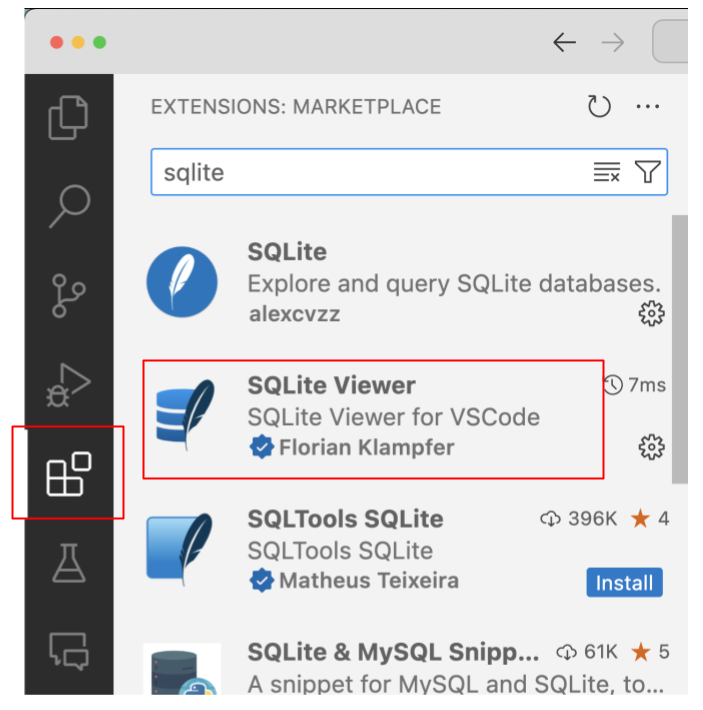
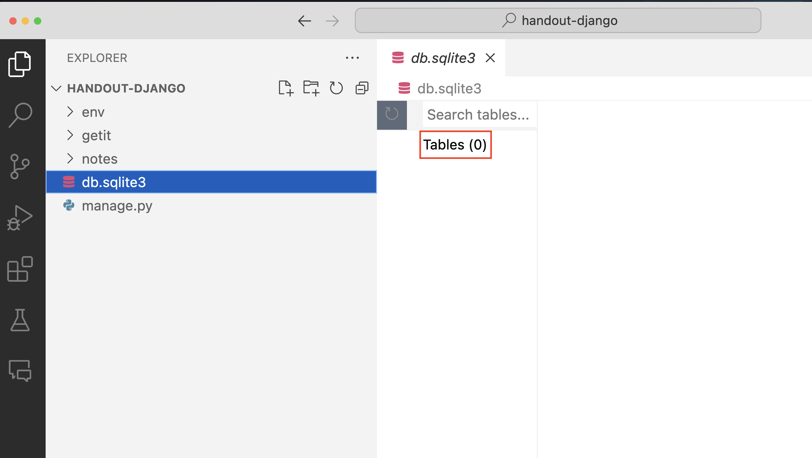
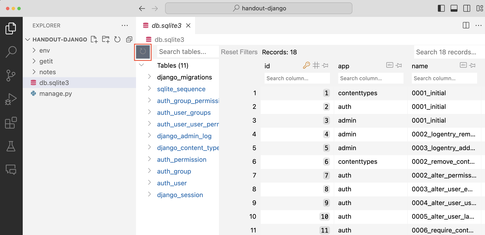
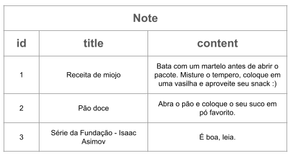
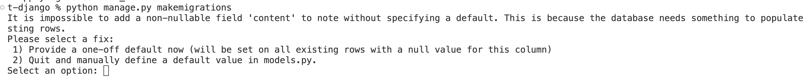
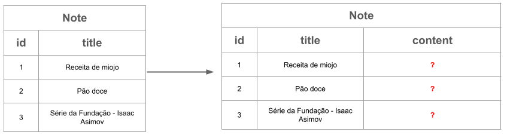
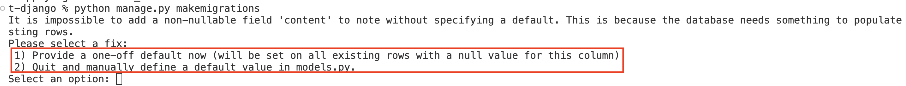
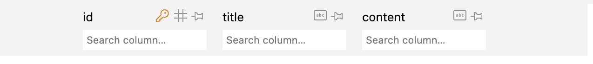

Parte 3: Integrando com o banco de dados
No handout 2 nós começamos a utilizar o SQLite para armazenar os dados do sistema. Para interagir com o banco foi necessário construir as strings com os comandos SQL, misturando a sintaxe do Python com a do SQL. A boa notícia é que o Django já possui uma integração com o banco de dados pronta. Melhor ainda, é muito simples trocar o banco de dados utilizado (SQLite, PostgreSQL, MySQL, etc.).
Abra o arquivo getit/settings.py. Procure o seguinte trecho de código:
DATABASES = {
'default': {
'ENGINE': 'django.db.backends.sqlite3',
'NAME': BASE_DIR / 'db.sqlite3',
}
}
Esse dicionário está configurando o SQLite como o banco de dados da aplicação (será criado um banco de dados no arquivo db.sqlite3 dentro da pasta principal do seu projeto). Se você quiser utilizar outro banco de dados, basta instalar as bibliotecas necessárias (em geral disponíveis para ser instaladas via pip install) e modificar os itens desse dicionário. Se quiser saber mais, consulte a documentação do Django.
Já que estamos no arquivo de configuração, aproveite para procurar pela lista INSTALLED_APPS. Ela deve ser parecida com essa:
INSTALLED_APPS = [
'django.contrib.admin',
'django.contrib.auth',
'django.contrib.contenttypes',
'django.contrib.sessions',
'django.contrib.messages',
'django.contrib.staticfiles',
]
Na parte 2 comentamos que um projeto é composto por múltiplos apps, que são partes de um sistema. A lista INSTALLED_APPS define os nomes dos apps utilizados pelo seu projeto. Por exemplo, há um app que é responsável por gerenciar arquivos estáticos (imagens, css, javascript, etc.), outro responsável pela autenticação (usuário, senha, mudança de senha) e assim por diante.
Nós já criamos um app para o nosso projeto, o notes. Vamos adicioná-lo na lista de apps nas configurações.
Exercício
Adicione o 'notes.apps.NotesConfig' como o primeiro elemento da lista INSTALLED_APPS.
O que raios é 'notes.apps.NotesConfig'?
Esse é o nome completo da classe de configuração. Ela foi criada automaticamente para você. Se tiver curiosidade, abra o arquivo notes/apps.py.
- ADICIONEI a configuração!
- NÃO ADICIONEI a configuração!
Resposta
Ao criar um app, no nosso caso notes, é necessário indicar que vamos utilizar este app em nosso projeto. Se essa estapa não for realizada, o projeto ignorará o app notes.
Banco de dados
Projetos Django utilizam o banco de dados relacional SQLite3 por padrão. Verifique nos arquivos do projeto se existe o arquivo db.sqlite3.
Vamos instalar uma extensão do VS Code para que possamos visualizar o banco de dados do nosso projeto.
- Com o VS Code aberto, vá em
Extensions/Extensões - Na barra de busca, digite
sqlite - Instale a extensão
SQLite Viewer
{kind=link}

Ao clicar no arquivo db.sqlite3, podemos visualizar o banco de dados do projeto. Porém, é possível notar que o banco de dados está vazio.
{kind=link}

O nosso projeto já tem diversos apps instalados. Vários desses apps utilizam o banco de dados para armazenar pelo menos uma tabela. Para que essas tabelas sejam criadas vamos utilizar o comando (no terminal):
python manage.py migrate
Atualize o banco de dados e veja que várias tabelas foram criadas. O projeto Django já oferece uma estrutura pronta para criar usuários, senhas, permissões entre outras coisas.
{kind=link}

Criando seus próprios modelos
Em nosso projeto, precisamos criar uma tabela no banco de dados armazenar as informações das anotações. Queremos algo como a imagem a seguir:
{kind=link}

No projeto 1A tivemos que implementar uma classe Database com comandos em SQL para criarmos a tabela note. Agora que estamos utilizando o framework Django, não precisamos escrever SQL.
O Django já tem uma integração com o banco de dados. Para isso nós precisamos criar classes do Python para representar os nossos modelos, cujos dados serão armazenados em tabelas nos bancos de dados relacionais. Vamos criar o nosso primeiro modelo.
Exercício
Substitua o conteúdo do arquivo notes/models.py por:
Nesse código nós criamos um modelo chamado Note que possui um atributo title, que será mapeado no banco de dados em uma coluna cujos valores são strings de no máximo 200 caracteres.
Exercício
Para que a tabela note seja criada no banco de dados de acordo com o modelo que criamos acima, precisamos pedir para o Django criar as migrações. Uma migração é a forma do Django armazenar modificações no banco de dados (criação de novas tabelas, por exemplo). Para isso, execute o comando abaixo:
python manage.py makemigrations
- FINALIZEI esta etapa!
- NÃO FINALIZEI esta etapa!
Resposta
Após executar este comando, um arquivo será criada na pasta notes/migrations. Não é necessário que entenda o conteúdo destes arqvuivos, basta saber que são scripts com instruções para atualização do banco de dados. No nosso caso, o script terá instruções para criar uma tabela nova chamada notes_note com o campo title.
O Django utiliza o padrão de nome para a criação das tabelas sendo AppName_ModelName, desta forma, como nosso app chama notes e o modelo chama note, a tabela criada será notes_note.
{kind=link}
Exercício
Se procurarmos a tabela notes_note no banco de dados não vamos encontrar, pois ainda não efetuamos as alterações no banco de dados.
Para aplicar as novas mudanças no banco de dados, precisamos executar outro comando.
python manage.py migrate
Nós já havíamos executado o comando python manage.py migrate para criar as tabelas dos apps no banco de dados. Como o nosso app notes também está entre os INSTALLED_APPS, esse mesmo comando também vai criar a tabela do modelo Note.
Agora a tabela deve aparecer no banco de dados:
{kind=link}
Note que não colocamos o campo id na model, porém a tabela já possui uma coluna para o id.
Como todas as tabelas precisarão de uma coluna para armazenar o identificador, o próprio Django se responsabiliza por criar essa coluna.
Exercício
Nossa tabela já está quase pronta, porém, falta a coluna content.
Leia a documentação do CharField. Ele não é recomendável para textos grandes. Crie na classe Note um atributo content com o tipo apropriado.
Existem diversos tipos de colunas que podem ser utilizados nos modelos. Por exemplo, relacionamentos entre entidades (tabelas) podem ser representados com o models.BooleanField, models.DateField, models.DecimalField entre outros.
- CRIEI o atributo para
content! - NÃO CRIEI o atributo para
content!
Resposta
Na documentação do CharField é possível encontrar a menção do campo TextField para textos maiores.
Sempre que atualizamos o arquivo models.py precisamos executar os comandos:
python manage.py makemigrations
e
python manage.py migrate
Lembrando que, o primeiro comando cria o script de criação/atualização da tabela. O segundo comando aplica esse script, efetivamente aplicando as mudanças no banco de dados.
Possível problema com makemigration
Ao executar o comando python manage.py makemigrations você deve ter se deparado com a seguinte mensagem:
{kind=link}

Explicando um pouco o que aconteceu.
Criamos o modelo Note contento apenas as colunas id e title. Em seguida, decidimos adicionar uma nova coluna content.
O problema é que o banco de dados pode já possuir valores armazenados. O que fazer com eles? Como atualizá-los? Qual deve ser o valor padrão utilizado nessa nova coluna para as linhas já existentes no banco? As migrações se responsabilizam por esse processo, facilitando a evolução do banco de dados em produção.
{kind=link}

Se olhamos com atenção para a mensagem apresentada pelo Django, podemos ver que ele oferece duas alternativas.
{kind=link}

Opção 1
Caso opte pela opção 1, você deve digitar no terminal o número 1 e pressione enter.
Em seguida, você deve inserir o valor padrão para a nova coluna, caso hajam dados já salvos no banco de dados.
Em nosso caso, vamos escolher a string vazia, desta forma, digite as "" (abrindo e fechando as aspas) e pressione enter.
Opção 2
Caso opte pela opção 2, você deve digitar no terminal o número 2 e pressione enter.
Em seguida, vá no arquivo models.py e adicione o argumento null=True no campo content, ficando content = models.TextField(null=True). Com esse argumento, estamos especificando que a coluna pode receber valores nulos.
Pronto! Pode rodar o comando python manage.py migrate e verificar se uma nova coluna foi criada.
Ao acessar a tabela notes_note podemos verificar que uma nova coluna foi criada.
{kind=link}

Ok, nós criamos o banco de dados, mas como eu adiciono dados nele e vejo o que está armazenado? Boa pergunta! Siga para a parte 4!